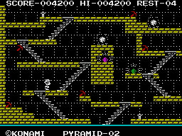

LOAD " "
LOAD " "
 King's Valley
King's ValleyCreated By:
Guillian, Jaime Tejedor Gomez, Francisco Javier Velasco
Release Year: 2009
...When ancient Egypt was at the height of its glory and its civilization, the great kings and pharaohs had hidden tombs built in remote and secret places in the remotest mountains to make it impossible for grave robbers to find them. From ancient times to the present, Egypt has been invaded by skilled grave robbers - some of them disguised as bogus archaeologists - in search of the famous treasures and luxurious objects with which the pharaohs and their families were buried.
These secret tombs were always carved deep on the slopes of the cliffs and dug in the form of horizontal chambers. The sovereign's mummy was placed in a stone sarcophagus located in a depression in the ground, in the main chamber of the tomb.
Throughout the ages, Egyptian pharaohs, kings, and sovereigns built a total of sixty-four hidden tombs. The place became known as THE VALLEY OF THE PHARAOHS, the valley in which the rulers of ancient Egypt hoped to rest forever surrounded by their ancient glory.
But except for the Thebes tomb of the great Tutankhamun (known as "King Tut"), the wishes of these pharaohs, kings and sovereigns were thwarted: all the great tombs were looted and most of them were turned into ruins.
However, despite this, with the passage of time a certain number of ancient kings were secretly transferred to other hidden places and - through more than 3400 years of history - they have managed to keep the secret of the famous "Mysterious Jewels. ", those that contain the secret of eternal life in the Kingdom of the Sun God.
